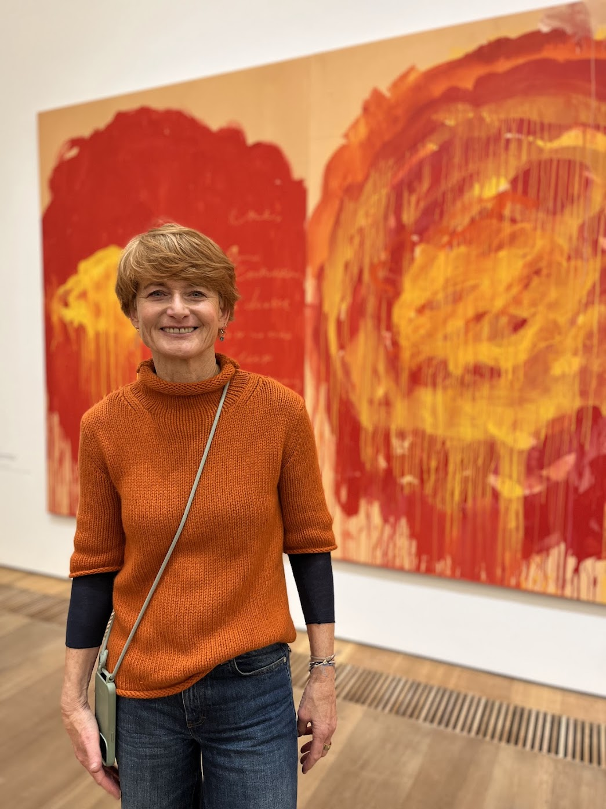

Michaela Quinn
Aufmerksam zuhören. Unsicherheit aushalten. Verlässlich bleiben.
Meine Haltung
Warum ich diese Begleitung anbiete
Ich glaube, dass Menschen in schweren Zeiten nicht immer eine Lösung brauchen.
Oft brauchen sie jemanden, der zuhört, Unsicherheit aushält und verlässlich bleibt.
In meiner Begleitung möchte ich einen Raum schaffen, in dem alles sein darf, was gerade da ist – auch Angst, Traurigkeit, Wut, Ratlosigkeit oder Stille.
Dabei verbinde ich aufmerksame Gespräche mit alltagsnahen, kreativen und körperorientierten Möglichkeiten.
Nicht nach einem festen Konzept, sondern passend zu dem Menschen, der vor mir ist.
Erfahrung
12 Jahre Erfahrung in der Hospizarbeit
Seit zwölf Jahren bin ich ehrenamtlich für das Hospiz St. Christophorus in München tätig – sowohl in der ambulanten Begleitung als auch im stationären Hospiz.
In dieser Zeit habe ich Menschen unterschiedlichen Alters, verschiedener Herkunft und mit unterschiedlichen Krankheitsbildern, Interessen und Bedürfnissen begleitet.
Diese Erfahrung hat mich gelehrt, dass es beim Abschied keinen „richtigen“ Weg gibt.
Jeder Mensch geht anders mit Krankheit, Sterben und Trauer um.
Manche möchten reden. Andere brauchen Ruhe. Manche suchen Gesellschaft, Bewegung oder etwas Kreatives.
Für mich bedeutet gute Begleitung deshalb vor allem: aufmerksam sein, zuhören und wahrnehmen, was der Mensch gerade braucht.
Begegnung
Offen, respektvoll und ohne Bewertung
Meine langjährigen Aufenthalte im Ausland haben meine Offenheit für verschiedene Nationalitäten und Lebensweisen geprägt.
Ich begegne Menschen mit Respekt und ohne Bewertung – unabhängig davon, woher sie kommen, wie sie leben oder wie sie mit Krankheit, Sterben und Trauer umgehen.
Ich versuche, im Rahmen des Möglichen zu unterstützen, aufzubauen und auch leichte Momente wieder zuzulassen.
Denn auch in schweren Zeiten darf gelacht werden. Und manchmal tut es gut, für einen Moment nicht nur über das Schwere zu sprechen.
Auf einen Blick
Qualifikationen & Erfahrung
Psychologische Beraterin
Trauer- und Sterbeamme
12 Jahre Hospiz St. Christophorus München
Ambulant & stationär
Deutsch & English
Sie möchten mich kennenlernen?
In einem kostenlosen Erstgespräch können wir ganz in Ruhe schauen, ob und wie ich Sie unterstützen kann.